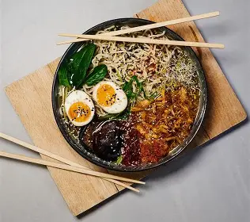

Ramen (ラーメン)
Ramen is a popular Japanese dish made with wheat noodles served in a rich and flavorful broth. It is typically topped with ingredients such as sliced pork, green onions, and bamboo shoots. There are many varieties of ramen, including soy sauce, miso, salt, and pork-based broths, each offering a unique taste. Wikipedia
History of Ramen
Types of Ramen

Shoyu (醤油)
Soy sauce based broth, typically light brown, originated in Tokyo.
Shio (塩)
Salt-based, the lightest and oldest style.
Miso (味噌)
Rich, hearty broth from miso paste, popular in Hokkaido.
Tonkotsu (豚骨)
Creamy pork bone broth, originated in Fukuoka. Japan Food Guide
Key Ingredients
Key ingredients in Japanese cuisine include rice, seafood, vegetables, tofu, and seaweed. Soy sauce, miso, and mirin are commonly used as seasonings to enhance flavor. Fresh and seasonal ingredients are highly valued, and simplicity is an important feature of Japanese cooking.
Watch: How Ramen is Made
Learn how traditional Japanese ramen is prepared, from making the broth to cooking the noodles. Cheap, Quick, and Easy Shoyu Ramen Recipe